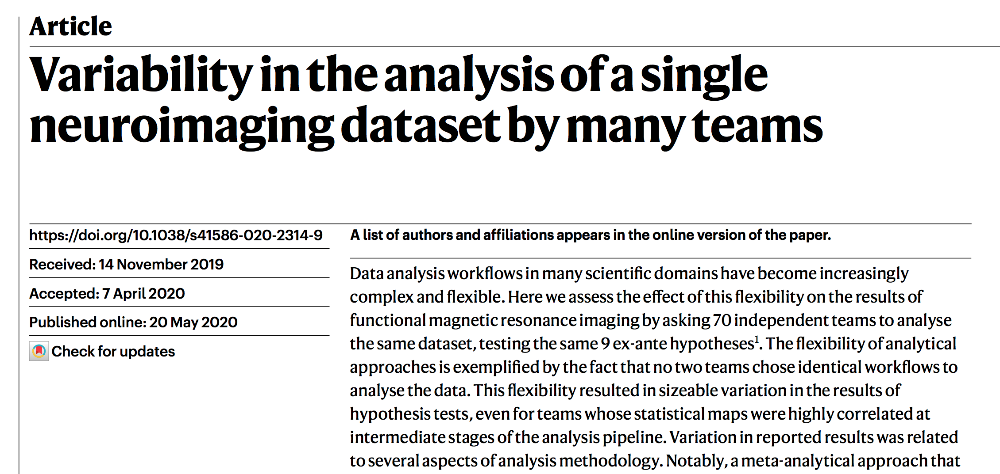
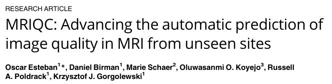

name: title layout: true class: center --- layout: false count: false .middle.center[ <p align="center"> <img src="https://raw.githubusercontent.com/nipreps/identity/refs/heads/main/nipreps-general/nipreps-transparent.png" width="80%" /> </p> ## Reliable Neuroimaging Preprocessing for Everyone <br /> <br /> ### Martin Nørgaard #### University of Copenhagen ###### [www.nipreps.org/presentations/20260611-BrainHack](https://www.nipreps.org/presentations/20260611-BrainHack/) ] --- name: newsection layout: true .perma-sidebar[ <p class="rotate"> <a rel="license" href="http://creativecommons.org/licenses/by/4.0/"><img alt="Creative Commons License" style="border-width:0; height: 20px; padding-top: 6px;" src="https://i.creativecommons.org/l/by/4.0/88x31.png" /></a> <span style="padding-left: 10px; font-weight: 600;">BrainHack 2026 — TrainTrack (Jun 11th, 2026)</span> </p> ] --- # The problem: analytical variability <p align="center"> <p></p><br /><br /> (<a href="https://doi.org/10.1038/s41586-020-2314-9">Botvinik-Nezer et al., 2020</a>) </p> ??? Neuroimaging research faces a critical challenge: the same dataset analyzed by different labs with different preprocessing pipelines can yield completely different results. This analytical variability undermines the reproducibility and reliability of our findings. --- # The research workflow .boxed-content[ <object type="image/svg+xml" data="../assets/neuroimaging-workflow-large.svg" style="width: 100%; padding-top: 20pt;"></object> .center[ [Esteban et al., (2020)](http://doi.org/10.1038/s41596-020-0327-3) ] ] ??? Preprocessing is not optional—it's a critical step that transforms raw scanner output into analysis-ready data. From data acquisition through quality control, preprocessing, feature extraction, and final statistical modeling: each step matters. --- # "Analysis-grade" data .larger[ The *NeuroImaging PREProcessing toolS* (*[NiPreps](https://nipreps.org).org*) augment scanners to produce *analysis-grade* data. ] <br /> .pull-left[ ***Analysis-grade* data** is like "*sushi-grade fish*": .large[**minimally preprocessed**,] and .large[**safe to consume** directly.] ] .pull-right[ <img align="right" style='margin-right: 50px' src="https://raw.githubusercontent.com/nipreps/identity/refs/heads/main/nipreps-general/nipreps-transparent.png" width="80%" /> ] --- class: stepwise-svg # NiPreps ecosystem <p align="center"> <img src="../assets/nipreps-chart.svg" width="70%" /><br /> </p> ??? NiPreps is not a single tool but a growing ecosystem of specialized preprocessing pipelines. fMRIPrep handles functional MRI. SMRIPrep tackles anatomical images. dMRIPrep processes diffusion data. And more are coming. --- class: stepwise-svg # fMRIPrep: despite minimal, highly complex .boxed-content.center[ <object type="image/svg+xml" data="../assets/fmriprep-natmeth-fig01-inkscape.svg" style="width: 75%;"></object> ] ??? Just preprocessing is complex. There's motion correction, distortion correction, brain extraction, registration to templates, nuisance signal identification—each step with many algorithmic choices. --- # The individual report <p align="center"> <video controls="controls" width="70%" name="Video Name" src="https://www.nipreps.org/assets/fmriprep-report.mov"></video> </p> ??? Every participant gets an interactive report showing exactly what the pipeline did. You can inspect brain extraction, registration quality, and motion patterns—visual quality assurance. --- # fMRIPrep adoption (weekly) <p align="center"> <img src="https://github.com/nipreps/fmriprep_stats/releases/latest/download/weekly.png" width="90%" /><br /> </p> ??? These are real-time statistics from our GitHub releases. fMRIPrep is now used in thousands of studies worldwide, and adoption continues to grow. --- # fMRIPrep: version management <p align="center"> <img src="https://github.com/nipreps/fmriprep_stats/releases/latest/download/versionstream.png" width="90%" /><br /> </p> .larger[ <i class="fa-solid fa-circle-right"></i> Exact versions matter for reproducibility <i class="fa-solid fa-circle-right"></i> Long-term support (LTS) program ] ??? We track semantic versioning carefully. If you report which version you used, others can exactly reproduce your work. --- # TemplateFlow: standardized brain templates <p align="center"> <img src="https://www.templateflow.org/assets/templateflow_fig-birdsview.png" width="60%" /><br /> (<a href="https://doi.org/10.1038/s41592-022-01681-2">Ciric et al., 2022</a>) </p> ??? Brain registration requires standard templates. TemplateFlow provides 80+ curated templates in a FAIR format. No more hunting through 10 different websites for a template—it's all organized and versioned. --- # Quality assurance and control <p align="center"> <p></p><br /> (<a href="http://doi.org/10.1371/journal.pone.0184661">Esteban et al., 2017</a>) </p> ??? MRIQC automatically extracts image quality metrics from your raw data. This lets you identify problematic images before they bias your analysis. --- # Getting started .boxed-content.larger.no-bullet[ * .large[<i class="fa-solid fa-link"></i>] [**nipreps.org**](https://www.nipreps.org) — Overview and documentation * .large[<i class="fa-solid fa-book"></i>] [**fMRIPrep guide**](https://fmriprep.org) — Installation and usage * .large[<i class="fa-solid fa-database"></i>] [**OpenNeuro**](https://openneuro.org) — Public datasets to test with * .large[<i class="fa-solid fa-cube"></i>] [**BIDS**](https://bids-standard.github.io/bids-standard/) — Learn the data format ] ??? Everything is open source and free to use. Start small: download an open dataset, organize it in BIDS format, and run fMRIPrep. --- # The NiPreps community .boxed-content.center[ <img style="width: 90%" src="https://raw.githubusercontent.com/nipreps/identity/refs/heads/main/nipreps-general/nipreps-members.png" /> ] ??? NiPreps is built by a community of 100+ researchers worldwide. It's not just code—it's a collaborative effort to standardize how we do neuroimaging. --- .boxed-content[ .middle.center[ # Questions? <a href="https://www.nipreps.org/presentations/20260611-BrainHack/"> <object type="image/svg+xml" data="images/qr-talk-url.svg" style="width: 25%"></object> <br /> www.nipreps.org/presentations/20260611-BrainHack/ </a> ] ]